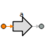

| m_out | PORTS_LIB.mech_trans | OUT | Output translational mechanical port | ||
| s_in | PORTS_LIB.analog_signal | IN | Input signal port |
| s_0 | REAL | 0 | Start position | m | |
| v_0 | REAL | 0 | Start velocity | m/s |
| a | REAL | Absolute acceleration | m/s^2 | ||
| s | REAL | Absolute position | m | ||
| v | REAL | Absolute speed | m/s |
Document generated automatically (Date: 2019:01:23, Time: 00:19:45)